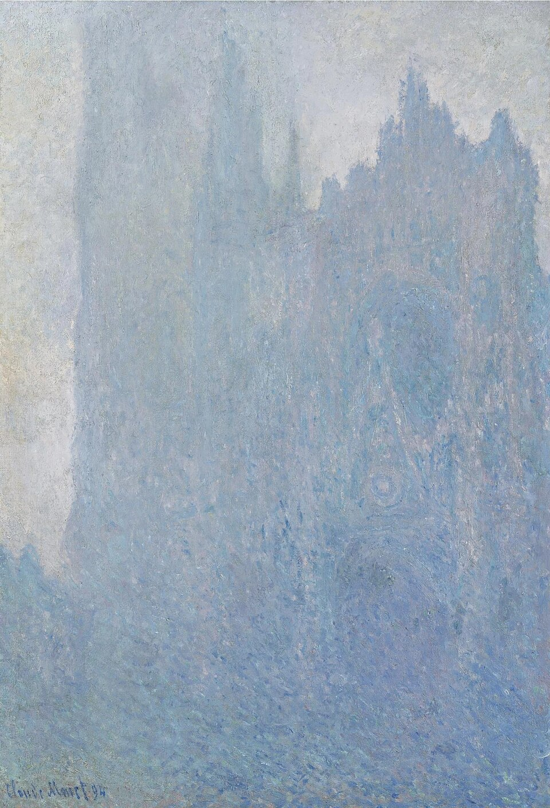
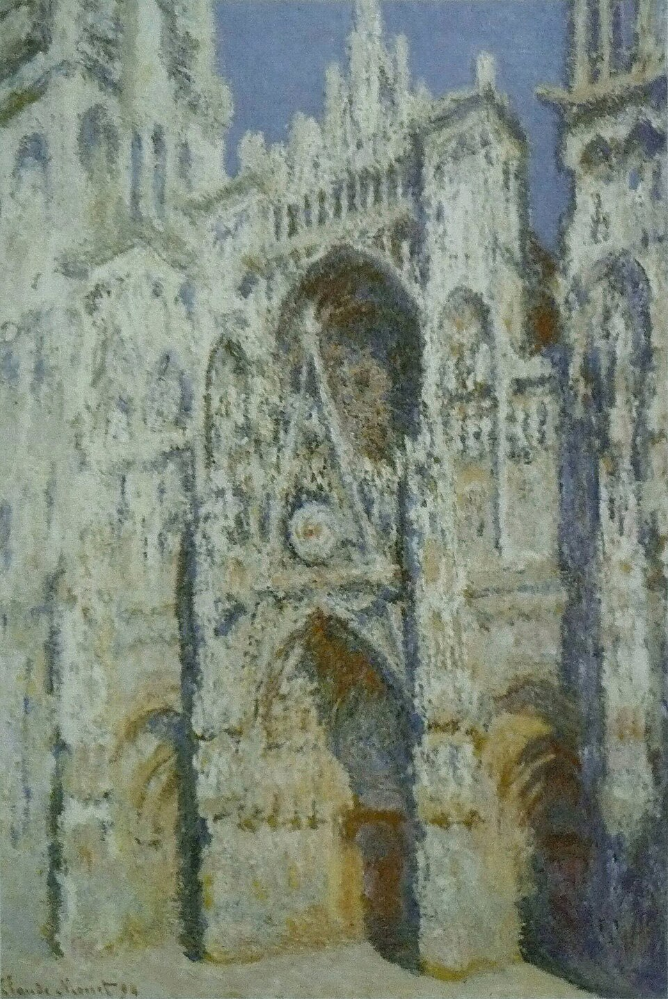
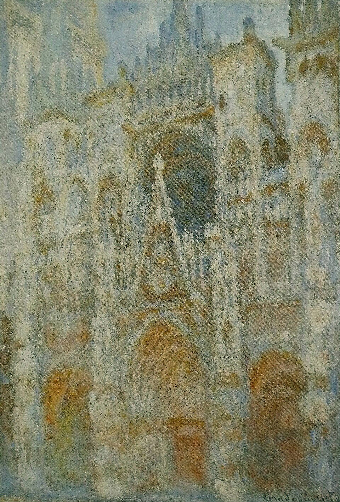
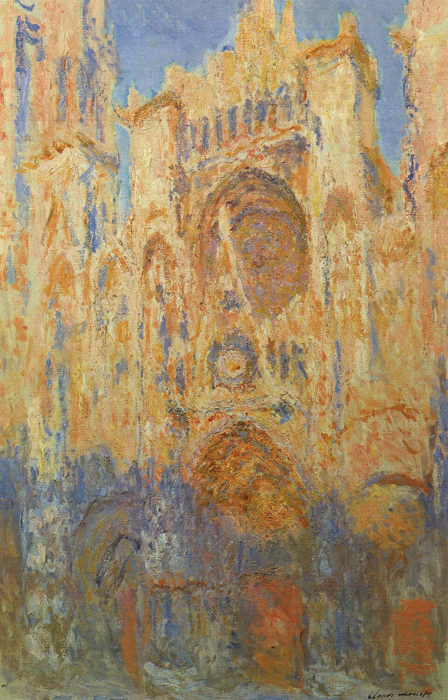

전시 소개
작품 해설
그림 위 빨간 점을 누르면 감상 포인트가 열려요※ 미디어 전시에서 실제로 다루는 작품 구성과 다를 수 있는 시안용 예시예요. 작품 이미지: Wikimedia Commons (퍼블릭 도메인)
빛의 연작
막대를 끌어 하루의 빛을 흘려보세요



06:00ROUEN CATHEDRAL SERIES · 1892–1894
같은 성당, 서른 번의 다른 빛
모네는 루앙 대성당 맞은편 건물에 방을 빌려, 같은 정면을 30점 넘게 그렸어요. 그가 그리고 싶었던 건 돌로 된 성당이 아니라 그 위에 시시각각 내려앉는 빛과 공기였어요.
06:00새벽 안개
이 시간의 팔레트
시각은 감상을 돕기 위한 예시예요 · 작품 이미지: Wikimedia Commons (퍼블릭 도메인)
모네와 대화
AI 도슨트가 모네가 되어 답해요모네와 대화질문을 고르거나 직접 입력해 보세요